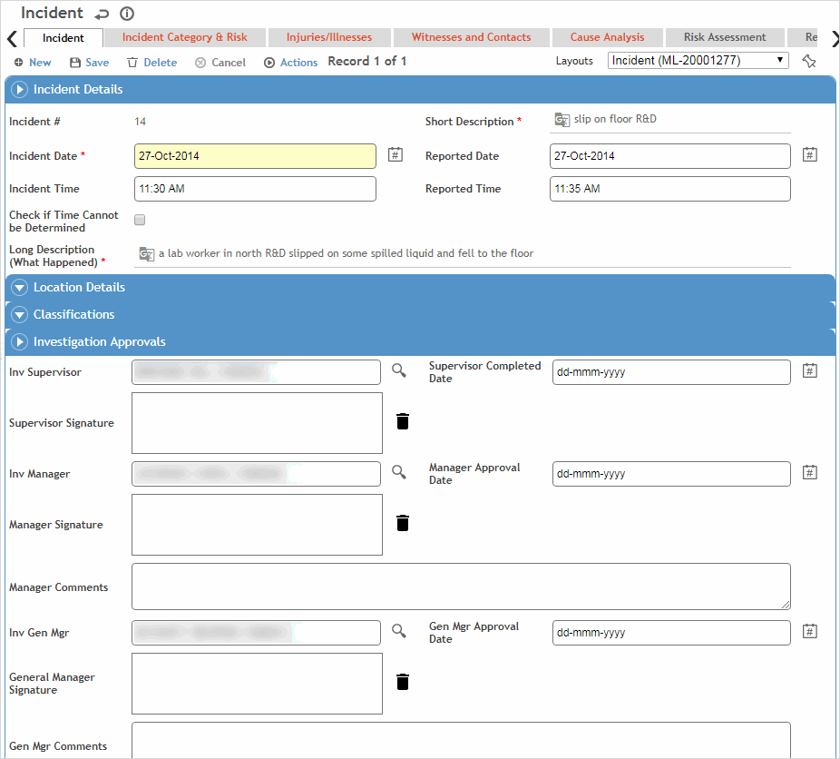
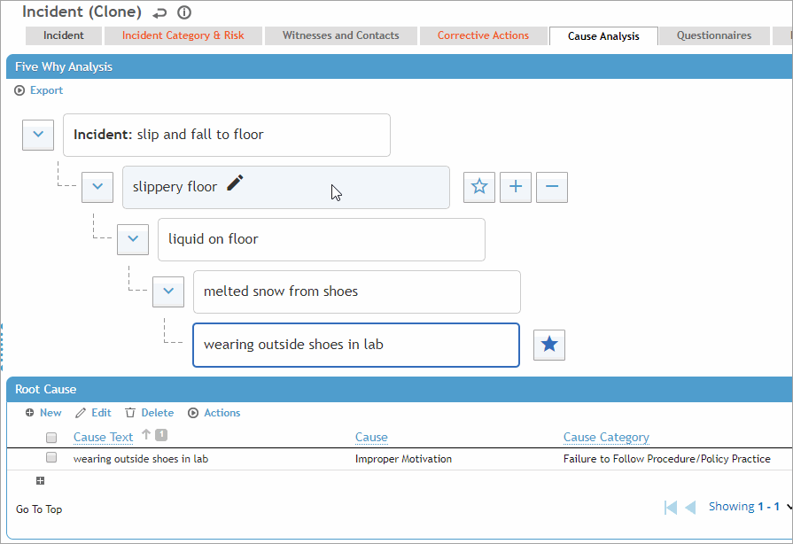
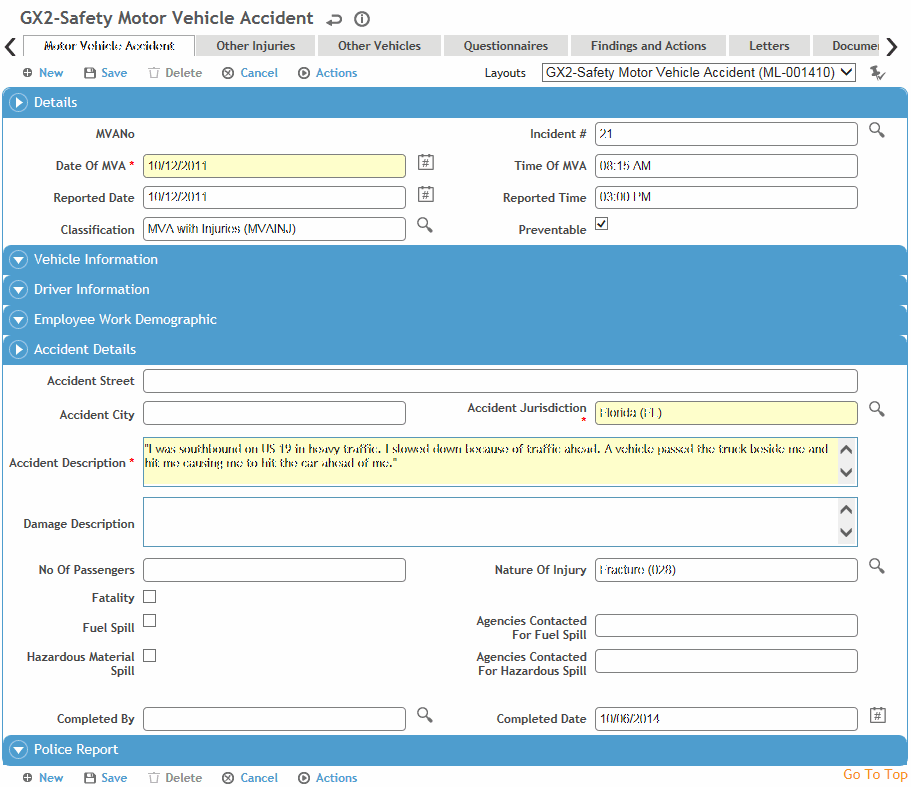
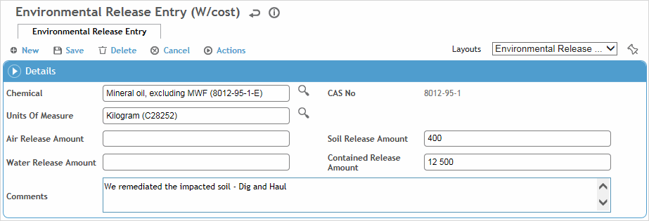

The incident report stores all the information about any type of incident. Safety incident reports can also record any employee’s occupational related illness or injury. If you are preparing an Employer’s First Report of Injury, this information is automatically transferred to the forms (see Completing the Employers Report).
→ Want a quick walkthrough? Watch the Incident course in Cority Academy (8 mins)
An incident report may be created automatically or manually; see How are Incident Reports Created?.
In the Safety menu, click Incident,
or
in the Environmental menu, click Incident Management,
then use the provided fields and views to filter the list.
About the Safety views:
Safety Incidents: because an incident can have more than one risk assigned to it, only the highest (most severe) is shown.
Safety Incidents - Injury/Illness: the list only shows records marked Share with Safety and/or Occupational in the Clinic Visit, Case Management, Body Fluid Exposure, or Audiometric modules. When you click a link to open the incident, it opens directly on the Injury/Illness form.
Safety Incidents by Category: because an incident can have more than one category assigned to it, incidents with more than one category will appear more than once in the list.
Safety views will only show incidents entered via the Safety»Incidents module, and Environmental views will only show incidents entered via the Environmental»Incidents module. However, both offer a view to view all incidents.
Click a link to edit a report, or click New.
Complete information about each incident in the following tabs:
Enter high-level information about the incident such as where and when it happened, a description of what happened, and any classifications that apply to the incident (Primary Category may be populated automatically if the incident was created from a clinic visit, or will be populated when you add a record on the Incident Category and Risk tab).
Some of these fields may have been transferred from the Case/Incident tab in the Clinic Visits module; if you change them here it does not affect the source forms. An exception is the GDDLOFB information, which matches that set in the Clinic Visit record which comes from Demographics. If you change the GDDLOFB information in Demographics, the clinic visit record, or on the Injury/Illness tab of the incident record, the changes ripple through the other areas (for the same case).
There is a system setting that allows synchronization of many of the Incident fields with similar fields on the Injury/Illness form.
Select the Supervisor, if it is not already populated.
If the “Enable Filtering of Incident Investigators Based on the Job position of the Employee Involved” system setting is enabled and if the Job Position form was completed in the employee’s demographic record, the primary job position will be populated and the look-up selector will only show the employee’s active positions. The supervisor, manager, and general manager associated with the job position will be populated, provided the Job Position form has been completed for these employees as well, unless any of the corresponding “Populate...” system settings have been turned off. In this case, Cority will check the IncidentInvestigator look-up table for a match, then to a default investigator assigned on the form layout. If none of these yields a match, you can manually select an investigator.
Click Save. Complete as many of the remaining tabs as applicable.
The Investigation EHS field is populated automatically if the incident’s GDDLOFB matches an entry in the InvestigationEHS look-up table.
If your company has a review process, complete the fields required according to your internal procedures (e.g. the minimum required to save the report, or more detail as necessary). When you are finished, choose Actions»Supervisor Email to begin the review process as described in How are Incident Reports Completed and Approved?.
Depending on your company policy and administrative settings, the investigation process may begin automatically when the incident is saved, and it is not necessary to choose the Supervisor Email action.
If a questionnaire is required, it must be created in the Incident module.
The Investigation Approval section displays the dates of approval (or rejection) through the investigation approval process. Each approver (EHS, General Manager, Manager, Supervisor) can capture their signature as part of their approval (if signature fields are included on a myCority layout, a signature is required to approve or reject).

To send an email containing read-only information about an incident report to any recipient, choose Actions»General Notification Email.
Identify one or more categories that the incident falls under.
Click a link to edit an existing record, or click New. For each category, identify the contact type, severity (worse case outcome vs actual outcome), probability of recurrence, and risk.
Risk-related information only appears if the related tables (HazardSeverityRating, Probability, and RiskDefinition) are tagged for Incident Finding assessment type. For information about how risk is calculated, see Working with Risk Assessment Results.
The first category record will be marked as the Primary category; if you select multiple categories, you can identify any one as the Primary category. The Primary Category is also displayed on the main Incident tab.
If the incident record was created from an event, a category record is created that matches the event's category and is marked Primary.
If the incident record was created from a clinic visit record, this tab will have a record for the category that is identified (in the GeneralIncidentCategory look-up table) as the Default Primary Incident Category for Safety Incidents Originating from OH.
If there is a layout linked to the primary category (on the GeneralIncidentCategory look-up table), all records on this tab will open in that layout.
The Injuries/Illnesses tab (Safety incidents only) displays all employee injuries or illnesses recorded for this incident. For information about recording an injury or illness, see Recording an Injury or Illness.
You cannot delete an incident record if it is linked to an occupational injury/illness record. You must deselect Occupational on the injury/illness record, or assign it to another incident.
Use this tab to link any witnesses or contacts to this incident. Contacts can be selected from the Contact look-up table or entered manually. If you select an employee, their demographic fields will be populated automatically.
Witnesses or contacts entered here are also visible in the related Case Management records.
Identify all causes recorded for this incident and the root cause. A tree format at the top of the Cause Analysis tab allows you to drill down to identify all causes and the root cause, and a table allows you to enter further details about one or more root cause.
This tab may include an image if defined in the system settings; the defined image appears in all incident records, it is not specific to a record. The “Why Tree” instructions are customizable in system settings.
To create the “cause tree”:
Click on Add a problem statement, change the text as appropriate, and press Enter.
To add the next level, hover over the previous level and click +.
Click on the new Add why this occurred entry, change the text as appropriate, and press Enter.
Repeat steps 2 and 3 to add more causes. Each level will be added below whichever cause is currently highlighted; in this way you can include multiple causes with their own subcauses. See the example below.
You can drag and drop causes in the tree to a different branch. Click on a cause and drag it to the branch or node you want it to appear under.
You can also export the Why Tree as an image or as a PDF.
To identify a root cause, highlight the cause and click . You can identify multiple root causes. An entry is created in the table for each root cause. These are linked: text changes in one are reflected in the other. (Tip: Click Edit to edit these fields directly in the table.) If you delete a root cause node from the tree, the corresponding entry in the table is removed. If you delete an entry from the table, the corresponding node is reset as a regular node (not a root cause).
To capture further details about a root cause, click a link in the table and select the Immediate/Direct Cause Category, Basic/Root Cause, Cause Type, Contribution Level (i.e. how much this root cause contributed to the incident), and any Lessons Learned. Depending on your system settings, the cause list may be limited to those identified as related to the selected cause category.
If there are any actions associated with the selected root cause (in the CauseofInjury look-up table), they are added to the Actions tab and you are prompted to complete them. To create an action for a selected root cause, select the entry and choose Actions»Create Action for this Root Cause. A corresponding finding is added to the Findings & Actions list.

This tab displays the active risk assessment associated with the Job Name identified on the Incident tab. Select an Assessment Type to view any risk assessments associated with this Job Name in other Clouds. You can pin any assessment type to be the default for this incident record.
For more information, see Performing a Medical, Safety, Ergonomic, or Environmental Risk Assessment. If an assessment has not yet been completed (the Tasks-Hazards-Controls section is empty), the message “No active assessment exists for this job name”.
The Risk Assessment tab also shows the responses to the Incident-Risk questionnaire.
Use this tab to record information about employee motor vehicle accidents, including any injuries (including injuries to non-employees) and other vehicles damaged.
Cority tabulates miles driven by department, division etc. and generates rate reports for accidents per million miles driven as well as an MVA counts reports. Images and questionnaires specific to motor vehicle accidents are also included.
Click a link to view an existing record, or click New.

On the Motor Vehicle Accident tab, enter information about the vehicle and general information about the accident. Users may also select a Related Asset (from the Equipment table) to manage fleets.
Information about injuries on this tab refers to the driver’s (employee’s) injuries only. To add information about injuries to others in the vehicle, use the Other Injuries tab.
Information about the vehicle on this tab refers to the vehicle that the employee was driving, not any other vehicle involved in the accident. To add information about other vehicles involved in the accident, use the Other Vehicles tab.
On the Other Injuries tab, record information about injuries to other people in the vehicle. If the injured party is a driver, an entry must also be made in the Other Vehicles tab
On the Other Vehicles tab, record information about other vehicles involved in the accident. Repeat for each other vehicle involved.
Use this tab to record any chemical spills as a as a result of this incident. Record the amount released into the air, soil, and/or water, the amount that was contained, as well as any further comments such as specific actions taken or whether the appropriate governing agency was contacted (or why it was not).

The Questionnaires tab allows you to associate questionnaires with a record. For information about creating and administering questionnaires, see Questionnaires.
The Findings and Actions tab displays all findings and actions recommended (or required) as a result of this incident, either entered directly or associated with a root cause (in the CauseofInjury look-up table).
If business rule BR-0000001 is activated, an incident cannot be closed (marked as EHS Approve) until all actions are completed (for more information, see Setting Up Business Rules).
For information about recording a finding and its actions, see Recording a New Finding.
To view an action’s attachment, open the finding and choose Actions»Open Document.
Use the Documents tab to link an external file to an incident. Linking a file to an incident offers safety professionals easy access to the file (for more information, see Linking or Importing a Document).
An icon on the Incident tab allows you to quickly add a document file. The icon turns into a preview thumbnail; if the file is an image, hovering over the thumbnail will display the full-size image. The document will also be listed on the Documents tab where it can be removed if necessary.
The Related Event Reports tab shows all event reports that have been posted to this incident. For more information, see Working with Event Reports.
If you have appropriate permission, you may delete a related event. This does not delete the related event, but only detaches it from the current incident. Detached event reports will remain in the Event Reporting Inbox.
The Letters tab allows you to view past letters or generate new letters to employees. Form letters are stored in the LettersTemplate look-up table. For information about creating letters, see Generating a Letter.